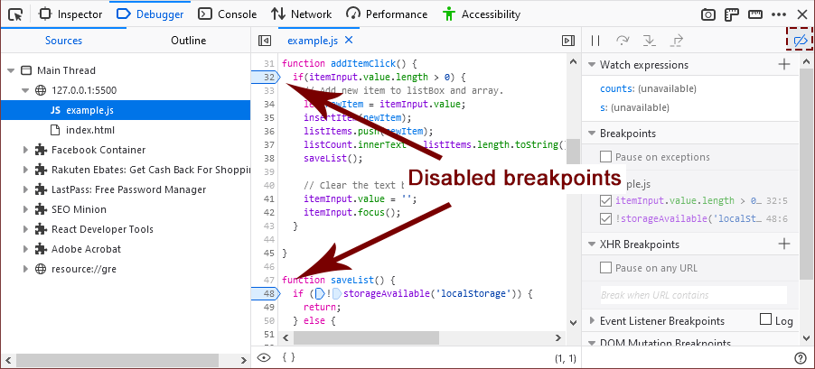

To disable a breakpoint, uncheck the checkbox next to it in the breakpoints list or click "Disable breakpoint" in its context menu.
To disable all breakpoints, click the "Deactivate breakpoints" icon in the toolbar.
The appearance of the breakpoints changes to a lighter color with a dark-colored border. For example:
